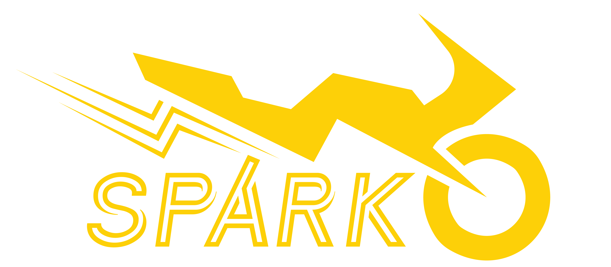

Projects
Spark | Website | CCC: Schlissels Market | ME 450 | ME 350 | ME 250 | ENGR 100
Spark Electric Racing

One of the most longest projects I have been a part of has been the design and construction of electric motorcycles as part of the Spark Electric Racing design team at UM.
The team originally started as a senior capstone project in the mechanical engineering department with the goal of retrofitting a gasoline motorcycle to be all electric. By the time I joined the team as a freshman, there were well established
and had secured space in the Wilson Student Team Project Center (WSTPC) amongst the UM Formula FSAE, Baja, and Solar Car teams. We are nearly complete in the assembly of the second bike Mercury
and are in the midst of design for the third bike Atlas. From January 2019 to May 2020, I served as the mechanical design lead - responsible for everything from thermal management and aerodynamics to structures and powertrain integration on Atlas.
Under my leadership, Atlas went from "Hey we should start designing a new bike" to approximately 70% designed. We had hoped to complete design in the spring of 2020, but due to the COVID-19 pandemic,
the team halted operations to allow our members to adapt to the remote learning environment.
Spark is unique in that we don't require any amount of work to remain on the team. We believe that "you get out what you put in." The members who are the most involved learn and grow the most and eventually become leaders. That said I've done quite a bit of work on Spark, so here's some of that work.
Atlas's Frame
I designed the entirety of Atlas's main frame in an effort to simplify fabrication and optimize the usable space on the bike in additon to having a structurally sound bike.
The decision was made early on to use round steel tubes instead of the square tubing selected for Mercury. The reasoning behind this decision was twofold.
First, round tubes could be bent into nonlinear shapes which would reduce the number of individual tubes and welds joints. This greatly would greatly simplify the frame welding and
reduce the number of points of failure. The second reason is that round tube is generally cheaper and more easily sourced than square tubing. Another key decision was the decision to
place the electric motor on the swing arm's rotation axis. This decision was the result of many challenges around chain alignment and tension on Mercury due to the drive axis being different than the swing arm axis.
The frame will be made from 4130 Steel and the tubes will be cut, bent, and notched by VR3, one of our suppliers/sponsors. Welding of the frame will be done in house by our team.
In addition to designing the frame, I also conducted the structural analysis of the frame using Hyperworks for pre- & post-processing and Abaqus as the solver. Every load case has at least a 1.5 safety factor against yielding in this analysis and further development of the model may yield higher safety factors in the turning load cases.
During the analysis, additional gussets were added near the front to provide additional reinforcement in the maximum braking loadcase since there were significant stress concentrations that would have caused yielding.
Atlas's Fairings
I also designed the fairings for Atlas. The fairings are the aerodynamic packaging for the motorcycle and vast majority of what you see. The fairings for Mercury were challenging to assemble and attach to the bike, so on Atlas, there are only two pieces that will be made from carbon fiber reinforced composites. In addition to reducing the number of components, the lower fairing doubles as the structure in which the batteries are contained. This will reduce weight and open up more space for a higher pack capacity. Using the knowlege learned in ME 451 Properties of Advanced Materials & Composites, I determined the necessary ply layering to produce a symmetric, quasi-isotropic laminate with the desired strength and stiffness to meet our needs.
Mercury's Cooling System
Prior to starting Atlas, one of the last remaining design items on Mercury was integrating a cooling system to prevent the system from overheating. The previous designers had failed to include space for the radiator or any hoses to circulate coolant. I determined how much heat would be produced by the motor and controller from their specifications then used a scholarly paper to predict the heat rejection from the radiator and determine required coolant and air flow rates. After specing out the system, I managed to find space to incorporate the radiator and other components onto the bike .
This Website
Born out of a global pandemic, this webiste one of my projects from Summer of 2020. I had originally planned to travel during this summer, but the pandemic blew that plan up, so I had to find something new to do. I learned the basics of HTML and CSS from Codecademy and set to work. It is currently hosted through GitHub's Pages for free. You can judge for yourself how I did on this project.
COVID Campus Challenge: Schlissel's Market
In the beginning of Summer 2020, UM launched the COVID Campus Challenge to solict student input on how to manage issues induced by COVID. Amongst the topic areas, there was transportation, housing, food security, and mental health. My group was working on addressing food insecurity on campus. Through scholarly research and contact with on-campus experts, we found that food insecurity at UM was largely driven by inaccessability instead of costs as we had expected. There are several areas of Ann Arbor which qualify as food deserts among which are several off-campus student housing areas. To remedy this shortcoming, we proposed that UM establish an on-campus, at-cost grocery store in an existing, under-utilised building already owned by UM. This grocery would increase equity, affordability, and nourishment of students living in proximity to UM. It would also reduce spread between the UM community and the Ann Arbor community at large by reducing interaction in groceries and on public transit to the groceries. An on-campus grocery would also enable a layout that is optimized for health and safety amid the pandemic. In the end, my team's proposal was not selected due to the high upfront capital investment and the fiancial strain on the university from the pandemic.
ME 450: Senior Capstone
ME 350: Design and Manufacturing II
ME 250: Design and Manufacturing I